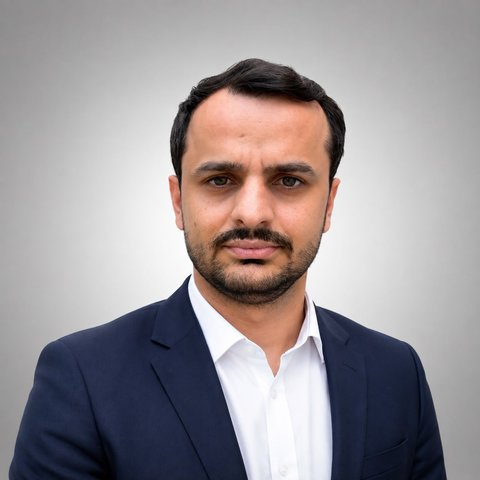

<!DOCTYPE html>
<html lang="tr">
<head>
<meta charset="utf-8">
<meta name="viewport" content="width=device-width, initial-scale=1, viewport-fit=cover">
<title>Rıfkı Terzioğlu</title>
<meta name="claude:viewport-fit-sides" content="cover">
<meta name="description" content="Doç. Dr. Rıfkı Terzioğlu — Bolu Abant İzzet Baysal Üniversitesi, Elektrik-Elektronik Mühendisliği">
<link rel="preconnect" href="https://fonts.googleapis.com">
<link rel="preconnect" href="https://fonts.gstatic.com" crossorigin>
<link rel="stylesheet" href="https://fonts.googleapis.com/css2?family=Newsreader:opsz,wght@6..72,400;6..72,500;6..72,600&family=IBM+Plex+Sans:ital,wght@0,400;0,500;0,600;1,400&family=IBM+Plex+Mono:wght@400;500&display=swap">
<style>
/* Layout: classic academic homepage — sticky identity column on the left, one reading column on the right; stacks on phones. */
:root{
  --paper:#F6F7F9; --surface:#FFFFFF; --ink:#17212C; --muted:#5B6674; --rule:#DDE2E8;
  --accent:#1E5C87; --accent-soft:#E7EFF6; --copper:#A4561F; --copper-soft:#F6ECE3; --c1:#1F6AA5; --c2:#C2763A;
  --f-display:"Newsreader", "Iowan Old Style", Georgia, serif;
  --f-body:"IBM Plex Sans", "Segoe UI", system-ui, sans-serif;
  --f-mono:"IBM Plex Mono", ui-monospace, "SFMono-Regular", Menlo, monospace;
  --s-1:.8125rem; --s0:1rem; --s1:1.1875rem; --s2:1.5rem; --s3:2.125rem;
}
@media (prefers-color-scheme: dark){ :root:not([data-theme="light"]){
  --paper:#0F151C; --surface:#151D27; --ink:#E3E8EE; --muted:#9AA6B4; --rule:#27323F;
  --accent:#86B8DF; --accent-soft:#18283A; --copper:#DE9A63; --copper-soft:#2A1F17; --c1:#4A8CC6; --c2:#BC773E; color-scheme:dark } }
:root[data-theme="dark"]{
  --paper:#0F151C; --surface:#151D27; --ink:#E3E8EE; --muted:#9AA6B4; --rule:#27323F;
  --accent:#86B8DF; --accent-soft:#18283A; --copper:#DE9A63; --copper-soft:#2A1F17; --c1:#4A8CC6; --c2:#BC773E; color-scheme:dark }

*{box-sizing:border-box}
body{background:var(--paper);color:var(--ink);font:400 var(--s0)/1.6 var(--f-body);-webkit-font-smoothing:antialiased}
a{color:var(--accent);text-decoration-thickness:1px;text-underline-offset:3px}
a:hover{text-decoration-thickness:2px}
:focus-visible{outline:2px solid var(--accent);outline-offset:2px;border-radius:2px}
h1,h2,h3{font-family:var(--f-display);font-weight:500;text-wrap:balance;margin:0;line-height:1.2}
p{margin:0}
.wrap{max-width:1320px;margin:0 auto;padding-left:max(16px, env(safe-area-inset-left, 0px));padding-right:max(16px, env(safe-area-inset-right, 0px));padding-block:40px 64px;display:grid;grid-template-columns:270px minmax(0,1fr);gap:56px}

/* ---------- identity column ---------- */
.side{position:sticky;top:calc(env(safe-area-inset-top, 0px) + 32px);align-self:start;display:flex;flex-direction:column;gap:22px}
.portrait{width:132px;height:132px;border-radius:50%;object-fit:cover;background:var(--accent-soft);border:1px solid var(--rule);display:block}
.mail{display:flex;align-items:center;justify-content:space-between;gap:6px}
.mail .v{min-width:0;text-decoration:none}
.mail .v:hover{text-decoration:underline}
.mail .btn-s{padding:4px 7px;font-size:.72rem;flex:none}
.mail.primary .v{font-weight:600}
.ids{display:flex;flex-direction:column;gap:6px}
.ids a{display:flex;justify-content:space-between;gap:8px;text-decoration:none;color:var(--ink);font-size:.86rem;padding:6px 8px;border:1px solid var(--rule);border-radius:6px;background:var(--surface)}
.ids a:hover{border-color:var(--accent);color:var(--accent)}
.ids a span{font:400 .74rem/1.6 var(--f-mono);color:var(--muted);overflow-wrap:anywhere;text-align:right}
.qrbox{display:flex;align-items:center;gap:12px;text-decoration:none;color:var(--muted);font-size:.78rem;line-height:1.4}
.qr{width:96px;height:96px;flex:none;border-radius:4px;border:1px solid var(--rule)}
.who h1{font-size:var(--s3);letter-spacing:-.01em}
.who .title{margin-top:6px;color:var(--muted);font-size:.95rem;line-height:1.45}
.nav{display:flex;flex-direction:column;gap:2px;border-top:1px solid var(--rule);padding-top:14px}
.nav a{color:var(--ink);text-decoration:none;padding:6px 10px;border-radius:6px;font-weight:500;font-size:.97rem}
.nav a:hover{background:var(--accent-soft)}
.nav a[aria-current="page"]{background:var(--accent-soft);color:var(--accent)}
.contact{display:flex;flex-direction:column;gap:8px;font-size:var(--s-1);color:var(--muted);border-top:1px solid var(--rule);padding-top:14px}
.contact .k{font:500 .7rem/1 var(--f-body);letter-spacing:.08em;text-transform:uppercase;color:var(--muted)}
.contact .v{color:var(--ink);font-size:.85rem;overflow-wrap:anywhere}
.copyrow{display:flex;align-items:center;gap:6px;flex-wrap:wrap}
.lang{display:inline-flex;border:1px solid var(--rule);border-radius:999px;padding:2px;align-self:flex-start;background:var(--surface)}
.lang button{border:0;background:none;color:var(--muted);font:500 .78rem/1 var(--f-body);letter-spacing:.06em;padding:6px 12px;border-radius:999px;cursor:pointer}
.lang button[aria-pressed="true"]{background:var(--ink);color:var(--paper)}

/* ---------- main column ---------- */
main{min-width:0;max-width:780px}
main.wide{max-width:none}
.view{display:flex;flex-direction:column;gap:44px}
.view[hidden]{display:none!important}
.eyebrow{font:500 .72rem/1 var(--f-body);letter-spacing:.1em;text-transform:uppercase;color:var(--copper)}
.head{display:flex;flex-direction:column;gap:10px}
.head h2{font-size:var(--s3)}
.lede{font-size:var(--s1);line-height:1.6;max-width:65ch}
section.block{display:flex;flex-direction:column;gap:16px}
section.block>h3{font-size:var(--s2);padding-bottom:8px;border-bottom:1px solid var(--rule)}
.prose{display:flex;flex-direction:column;gap:14px;max-width:65ch}

.areas{display:grid;grid-template-columns:repeat(2,minmax(0,1fr));gap:12px}
@media (max-width:560px){ .areas{grid-template-columns:minmax(0,1fr)} }
.area{background:var(--surface);border:1px solid var(--rule);border-radius:8px;padding:14px 16px;display:flex;flex-direction:column;gap:4px}
.area b{font-weight:600;font-size:.95rem}
.area span{color:var(--muted);font-size:.86rem;line-height:1.45}

.facts{display:flex;flex-wrap:wrap;gap:10px 28px;font-size:.9rem;color:var(--muted)}
.facts b{font:500 1.5rem/1 var(--f-display);color:var(--ink);display:block;margin-bottom:4px;font-variant-numeric:tabular-nums}

/* timeline-like rows: date | content */
.rows{display:flex;flex-direction:column}
.row{display:grid;grid-template-columns:150px minmax(0,1fr);gap:16px;padding:12px 0;border-bottom:1px solid var(--rule)}
.row:last-child{border-bottom:0}
.row .when{font:400 .82rem/1.5 var(--f-mono);color:var(--muted);font-variant-numeric:tabular-nums;padding-top:2px}
.row .what b{font-weight:600}
.row .what .sub{color:var(--muted);font-size:.9rem;margin-top:2px}

/* ---------- publications ---------- */
.toolbar{display:flex;flex-wrap:wrap;gap:10px;align-items:center}
.chips{display:flex;flex-wrap:wrap;gap:6px}
.chip{border:1px solid var(--rule);background:var(--surface);color:var(--ink);font:500 .82rem/1 var(--f-body);padding:8px 12px;border-radius:999px;cursor:pointer}
.chip .n{font-family:var(--f-mono);color:var(--muted);margin-left:6px;font-size:.75rem}
.chip[aria-pressed="true"]{background:var(--ink);color:var(--paper);border-color:var(--ink)}
.chip[aria-pressed="true"] .n{color:var(--paper);opacity:.7}
.search{flex:1 1 220px;min-width:0;border:1px solid var(--rule);background:var(--surface);color:var(--ink);border-radius:8px;padding:9px 12px;font:inherit;font-size:.92rem}
.yeargroup{display:flex;flex-direction:column}
.year{font:500 1.05rem/1 var(--f-mono);color:var(--muted);padding:18px 0 6px;position:relative}
.pub{display:grid;grid-template-columns:minmax(0,1fr);gap:6px;padding:12px 0 14px;border-bottom:1px solid var(--rule)}
.pub .t{font-family:var(--f-display);font-size:1.12rem;line-height:1.35;font-weight:500}
.pub .a{font-size:.9rem;color:var(--muted)}
.pub .a .me{color:var(--ink);font-weight:600}
.pub .v{font-size:.9rem}
.pub .v i{font-style:italic}
.pub .meta{display:flex;flex-wrap:wrap;gap:8px;align-items:center;margin-top:2px}
.tag{font:500 .7rem/1 var(--f-body);letter-spacing:.05em;text-transform:uppercase;padding:5px 8px;border-radius:4px;background:var(--accent-soft);color:var(--accent)}
.tag.cu{background:var(--copper-soft);color:var(--copper)}
.doi{font:400 .78rem/1 var(--f-mono);padding:5px 8px;border:1px solid var(--rule);border-radius:4px;text-decoration:none;color:var(--accent)}
.btn-s{font:500 .78rem/1 var(--f-body);padding:6px 9px;border:1px solid var(--rule);border-radius:4px;background:none;color:var(--muted);cursor:pointer}
.btn-s:hover{color:var(--ink);border-color:var(--muted)}
.empty{color:var(--muted);padding:20px 0}

/* ---------- publication charts ---------- */
.pubgrid{display:grid;grid-template-columns:minmax(0,1fr) 300px;gap:40px;align-items:start}
.publeft{min-width:0;display:flex;flex-direction:column;gap:14px}
.charts{display:flex;flex-direction:column;gap:14px}
.chart{margin:0;background:var(--surface);border:1px solid var(--rule);border-radius:10px;padding:14px 14px 12px;display:flex;flex-direction:column;gap:8px;min-width:0}
.chart figcaption{display:flex;flex-direction:column;gap:5px}
.chart figcaption b{font-weight:600;font-size:.9rem}
.legend{display:flex;gap:14px;font-size:.75rem;color:var(--muted)}
.sw{width:10px;height:10px;border-radius:2px;display:inline-block;margin-right:5px;vertical-align:-1px}
.cstats{font:400 .74rem/1.4 var(--f-mono);color:var(--muted)}
.cstats b{font-weight:500;color:var(--ink);font-size:.74rem}
.cstats span{white-space:nowrap}
.chart svg{width:100%;height:auto;display:block}
.chart svg text{font-family:var(--f-mono);fill:var(--muted)}
.chart svg .vl{fill:var(--ink);font-weight:500}
.chart svg .hit{fill:transparent;cursor:pointer;outline:none}
.chart svg .hit:focus-visible{stroke:var(--accent);stroke-width:1.5}
.chart .src{font-size:.7rem;color:var(--muted);line-height:1.45}
.chart svg g.col{transition:opacity .15s}
.chart svg.has-active g.col:not(.on){opacity:.3}
#tip{position:fixed;z-index:60;pointer-events:none;background:var(--ink);color:var(--paper);font:500 .78rem/1.35 var(--f-body);padding:6px 9px;border-radius:6px;white-space:nowrap}
.chartrow{display:grid;grid-template-columns:repeat(auto-fit,minmax(230px,1fr));gap:14px}
.activefilter{display:flex;align-items:center;gap:10px;font-size:.86rem;color:var(--muted)}
.tag.q{background:var(--ink);color:var(--paper)}
.cnt{font:400 .76rem/1 var(--f-mono);color:var(--muted)}
@media (max-width:1180px){
  .pubgrid{grid-template-columns:minmax(0,1fr)}
  .charts{position:static;order:-1;display:grid;grid-template-columns:repeat(auto-fit,minmax(240px,1fr))}
}

/* ---------- projects (styles) ---------- */
.demos{display:grid;grid-template-columns:repeat(auto-fit,minmax(280px,1fr));gap:16px}
.demo{background:var(--surface);border:1px solid var(--rule);border-radius:10px;overflow:hidden;display:flex;flex-direction:column}
.demo canvas{display:block;width:100%;height:150px;background:#0b1220}
.demo .body{padding:16px 18px 18px;display:flex;flex-direction:column;gap:8px;flex:1}
.demo h4{margin:0;font:500 1.2rem/1.25 var(--f-display)}
.demo p{color:var(--muted);font-size:.9rem;line-height:1.5}
.demo .spec{font:400 .76rem/1.5 var(--f-mono);color:var(--muted)}
.demo .actions{display:flex;gap:10px;flex-wrap:wrap;margin-top:auto;padding-top:6px}
.btn{font:500 .88rem/1 var(--f-body);padding:10px 14px;border-radius:6px;border:1px solid var(--accent);background:var(--accent);color:var(--paper);cursor:pointer;text-decoration:none;display:inline-flex;align-items:center;gap:6px}
.btn.ghost{background:none;color:var(--accent)}
.proj{display:grid;grid-template-columns:minmax(0,1fr);gap:6px;padding:14px 0;border-bottom:1px solid var(--rule)}
.proj .t{font-weight:500;line-height:1.45}
.proj .meta{display:flex;flex-wrap:wrap;gap:8px;align-items:center;font-size:.84rem;color:var(--muted)}
.proj .meta .d{font-family:var(--f-mono);font-size:.78rem}
.status{display:inline-flex;align-items:center;gap:6px;font-size:.78rem}
.status::before{content:"";width:7px;height:7px;border-radius:50%;background:var(--muted)}
.status.on::before{background:#2E9A5B}
.proj .link{font-size:.86rem}

/* ---------- courses ---------- */
.table-wrap{overflow-x:auto}
table{border-collapse:collapse;width:100%;font-size:.93rem}
th,td{text-align:left;padding:10px 12px 10px 0;border-bottom:1px solid var(--rule);vertical-align:top}
th{font:500 .72rem/1 var(--f-body);letter-spacing:.08em;text-transform:uppercase;color:var(--muted)}
td.num{font-family:var(--f-mono);font-variant-numeric:tabular-nums}
.note{background:var(--surface);border:1px dashed var(--rule);border-radius:8px;padding:14px 16px;color:var(--muted);font-size:.9rem}

footer{grid-column:1/-1;border-top:1px solid var(--rule);padding-top:18px;color:var(--muted);font-size:.8rem;display:flex;justify-content:space-between;flex-wrap:wrap;gap:8px}

/* ---------- demo overlay ---------- */
.overlay{position:fixed;inset:0;z-index:50;background:#0b1220;display:flex;flex-direction:column;padding-top:env(safe-area-inset-top,0px);padding-bottom:env(safe-area-inset-bottom,0px)}
.overlay[hidden]{display:none!important}
.overlay .bar{display:flex;align-items:center;gap:12px;padding:10px max(16px, env(safe-area-inset-right, 0px)) 10px max(16px, env(safe-area-inset-left, 0px));color:#dfe7f3;border-bottom:1px solid rgba(140,170,220,.25);font-size:.9rem}
.overlay .bar b{font-weight:500;flex:1;min-width:0;overflow:hidden;text-overflow:ellipsis;white-space:nowrap}
.overlay .bar a,.overlay .bar button{color:#dfe7f3;background:#1b2a44;border:1px solid rgba(140,170,220,.3);border-radius:6px;padding:7px 12px;font:500 .82rem/1 var(--f-body);text-decoration:none;cursor:pointer}
.overlay iframe{flex:1;width:100%;border:0;display:block}

@media (max-width:880px){
  .wrap{grid-template-columns:minmax(0,1fr);gap:32px;padding-block:24px 48px}
  .side{position:static;gap:16px}
  .ident{display:flex;gap:16px;align-items:center}
  .portrait{width:84px;height:84px;flex:none}
  .nav{flex-direction:row;flex-wrap:wrap;gap:4px}
  .contact{display:none}
  .contact.mobile{display:flex}
}
@media (min-width:881px){ .contact.mobile{display:none} }
@media (max-width:520px){
  .row{grid-template-columns:minmax(0,1fr);gap:2px}
  :root{--s3:1.8rem}
}
@media (prefers-reduced-motion:reduce){ *{transition:none!important;animation:none!important} }
</style>
</head>
<body>

<div class="wrap">
  <aside class="side">
    <div class="ident">
      
      <div class="who">
        <h1>Rıfkı Terzioğlu</h1>
        <p class="title" data-i18n="role"></p>
      </div>
    </div>
    <div class="lang" role="group" aria-label="Dil / Language">
      <button type="button" id="lang-tr" data-lang="tr">TR</button>
      <button type="button" id="lang-en" data-lang="en">EN</button>
    </div>
    <nav class="nav" aria-label="Bölümler">
      <a href="#hakkimda" data-view="hakkimda" data-i18n="nav_about"></a>
      <a href="#yayinlar" data-view="yayinlar" data-i18n="nav_pubs"></a>
      <a href="#projeler" data-view="projeler" data-i18n="nav_projects"></a>
      <a href="#dersler" data-view="dersler" data-i18n="nav_courses"></a>
    </nav>
    <div class="contact" id="contact-side"></div>
  </aside>

  <main>
    <!-- ================= HAKKIMDA ================= -->
    <div class="view" id="v-hakkimda">
      <div class="head">
        <span class="eyebrow" data-i18n="about_eyebrow"></span>
        <h2 data-i18n="about_h"></h2>
        <p class="lede" data-i18n="about_lede"></p>
      </div>
      <div class="facts" id="facts"></div>
      <section class="block">
        <h3 data-i18n="metrics_h"></h3>
        <div class="chartrow">
          <figure class="chart">
            <figcaption><b data-i18n="ch_pubs"></b><span class="legend" id="lg-pubs-h"></span></figcaption>
            <div id="ch-pubs-h"></div>
          </figure>
          <figure class="chart">
            <figcaption><b data-i18n="ch_cites"></b><span class="cstats" id="cstats-h"></span></figcaption>
            <div id="ch-cites-h"></div>
            <p class="src" data-i18n="src_scholar"></p>
          </figure>
          <figure class="chart">
            <figcaption><b data-i18n="ch_q"></b></figcaption>
            <div id="ch-q-h"></div>
            <p class="src" data-i18n="src_sjr_h"></p>
          </figure>
        </div>
      </section>
      <section class="block">
        <h3 data-i18n="areas_h"></h3>
        <div class="areas" id="areas"></div>
      </section>
      <section class="block">
        <h3 data-i18n="edu_h"></h3>
        <div class="rows" id="edu"></div>
      </section>
      <section class="block">
        <h3 data-i18n="pos_h"></h3>
        <div class="rows" id="pos"></div>
      </section>
      <section class="block">
        <h3 data-i18n="admin_h"></h3>
        <div class="rows" id="admin"></div>
      </section>
      <section class="block">
        <h3 data-i18n="thesis_h"></h3>
        <div class="rows" id="theses"></div>
      </section>
      <section class="block">
        <h3 data-i18n="award_h"></h3>
        <div class="rows" id="awards"></div>
      </section>
      <div class="contact mobile" id="contact-mobile"></div>
    </div>

    <!-- ================= YAYINLAR ================= -->
    <div class="view" id="v-yayinlar" hidden>
      <div class="head">
        <span class="eyebrow" data-i18n="pubs_eyebrow"></span>
        <h2 data-i18n="pubs_h"></h2>
        <p class="lede" data-i18n="pubs_lede"></p>
      </div>
      <div class="pubgrid">
        <div class="publeft">
          <div class="toolbar">
            <div class="chips" id="pubfilters"></div>
            <input class="search" id="pubsearch" type="search" autocomplete="off">
          </div>
          <div class="activefilter" id="pubactive" hidden></div>
          <div id="publist"></div>
        </div>
        <aside class="charts">
          <figure class="chart">
            <figcaption><b data-i18n="ch_pubs"></b><span class="legend" id="lg-pubs"></span></figcaption>
            <div id="ch-pubs"></div>
          </figure>
          <figure class="chart">
            <figcaption><b data-i18n="ch_cites"></b><span class="cstats" id="cstats"></span></figcaption>
            <div id="ch-cites"></div>
            <p class="src" data-i18n="src_scholar"></p>
          </figure>
          <figure class="chart">
            <figcaption><b data-i18n="ch_q"></b></figcaption>
            <div id="ch-q"></div>
            <p class="src" data-i18n="src_sjr"></p>
          </figure>
        </aside>
      </div>
    </div>

    <!-- ================= PROJELER ================= -->
    <div class="view" id="v-projeler" hidden>
      <div class="head">
        <span class="eyebrow" data-i18n="proj_eyebrow"></span>
        <h2 data-i18n="proj_h"></h2>
        <p class="lede" data-i18n="proj_lede"></p>
      </div>
      <section class="block">
        <h3 data-i18n="demos_h"></h3>
        <div class="demos" id="demos"></div>
      </section>
      <section class="block">
        <h3 data-i18n="projlist_h"></h3>
        <div class="chips" id="projfilters"></div>
        <div id="projlist"></div>
      </section>
    </div>

    <!-- ================= DERSLER ================= -->
    <div class="view" id="v-dersler" hidden>
      <div class="head">
        <span class="eyebrow" data-i18n="courses_eyebrow"></span>
        <h2 data-i18n="courses_h"></h2>
        <p class="lede" data-i18n="courses_lede"></p>
      </div>
      <section class="block">
        <h3 data-i18n="courses_current"></h3>
        <div class="table-wrap"><table id="courses"></table></div>
      </section>
      <section class="block">
        <h3 data-i18n="notes_h"></h3>
        <p class="note" data-i18n="notes_text"></p>
      </section>
    </div>
  </main>

  <footer>
    <span>© <span id="yr"></span> Rıfkı Terzioğlu</span>
    <span data-i18n="footer_upd"></span>
  </footer>
</div>

<div id="tip" hidden></div>

<div class="overlay" id="overlay" hidden role="dialog" aria-modal="true" aria-labelledby="ov-title">
  <div class="bar">
    <b id="ov-title"></b>
    <a id="ov-open" href="#" target="_blank" rel="noopener" data-i18n="ov_newtab"></a>
    <button type="button" id="ov-close" data-i18n="ov_close"></button>
  </div>
  <iframe id="ov-frame" title="Demo" allow="fullscreen"></iframe>
</div>

<script>
/* =====================================================================
   SİTE İÇERİĞİ — yeni yayın, proje veya ders eklemek için yalnızca
   bu bölümdeki listeleri düzenlemeniz yeterlidir.
   ===================================================================== */
const ME = "Terzioğlu R.";
const EMAILS = ["rifkiterzioglu@ibu.edu.tr","rifki.terzioglu@cern.ch","rifkiterzioglu@gmail.com","rifkiterzioglu@hotmail.com"];
const ORCID = "0000-0001-6305-5349";
const PROFILES = [
  {name:"ORCID", id:ORCID, url:"https://orcid.org/"+ORCID},
  {name:"Google Scholar", id:"cIiZGzcAAAAJ", url:"https://scholar.google.com/citations?user=cIiZGzcAAAAJ&hl=tr"},
  {name:"Web of Science", id:"C-1995-2017", url:"https://www.webofscience.com/wos/author/record/C-1995-2017"},
  {name:"Scopus", id:"57192555025", url:"https://www.scopus.com/authid/detail.uri?authorId=57192555025"}
];
const ORCID_QR = '<svg class="qr" viewBox="0 0 31 31" shape-rendering="crispEdges" role="img" aria-label="ORCID QR"><rect width="31" height="31" fill="#fff"/><path d="M1,1h1v1h-1zM2,1h1v1h-1zM3,1h1v1h-1zM4,1h1v1h-1zM5,1h1v1h-1zM6,1h1v1h-1zM7,1h1v1h-1zM10,1h1v1h-1zM12,1h1v1h-1zM15,1h1v1h-1zM19,1h1v1h-1zM20,1h1v1h-1zM21,1h1v1h-1zM23,1h1v1h-1zM24,1h1v1h-1zM25,1h1v1h-1zM26,1h1v1h-1zM27,1h1v1h-1zM28,1h1v1h-1zM29,1h1v1h-1zM1,2h1v1h-1zM7,2h1v1h-1zM9,2h1v1h-1zM10,2h1v1h-1zM12,2h1v1h-1zM13,2h1v1h-1zM14,2h1v1h-1zM18,2h1v1h-1zM19,2h1v1h-1zM23,2h1v1h-1zM29,2h1v1h-1zM1,3h1v1h-1zM3,3h1v1h-1zM4,3h1v1h-1zM5,3h1v1h-1zM7,3h1v1h-1zM10,3h1v1h-1zM13,3h1v1h-1zM16,3h1v1h-1zM19,3h1v1h-1zM21,3h1v1h-1zM23,3h1v1h-1zM25,3h1v1h-1zM26,3h1v1h-1zM27,3h1v1h-1zM29,3h1v1h-1zM1,4h1v1h-1zM3,4h1v1h-1zM4,4h1v1h-1zM5,4h1v1h-1zM7,4h1v1h-1zM10,4h1v1h-1zM11,4h1v1h-1zM13,4h1v1h-1zM14,4h1v1h-1zM17,4h1v1h-1zM18,4h1v1h-1zM20,4h1v1h-1zM23,4h1v1h-1zM25,4h1v1h-1zM26,4h1v1h-1zM27,4h1v1h-1zM29,4h1v1h-1zM1,5h1v1h-1zM3,5h1v1h-1zM4,5h1v1h-1zM5,5h1v1h-1zM7,5h1v1h-1zM9,5h1v1h-1zM10,5h1v1h-1zM13,5h1v1h-1zM14,5h1v1h-1zM17,5h1v1h-1zM19,5h1v1h-1zM21,5h1v1h-1zM23,5h1v1h-1zM25,5h1v1h-1zM26,5h1v1h-1zM27,5h1v1h-1zM29,5h1v1h-1zM1,6h1v1h-1zM7,6h1v1h-1zM10,6h1v1h-1zM11,6h1v1h-1zM15,6h1v1h-1zM16,6h1v1h-1zM17,6h1v1h-1zM18,6h1v1h-1zM20,6h1v1h-1zM23,6h1v1h-1zM29,6h1v1h-1zM1,7h1v1h-1zM2,7h1v1h-1zM3,7h1v1h-1zM4,7h1v1h-1zM5,7h1v1h-1zM6,7h1v1h-1zM7,7h1v1h-1zM9,7h1v1h-1zM11,7h1v1h-1zM13,7h1v1h-1zM15,7h1v1h-1zM17,7h1v1h-1zM19,7h1v1h-1zM21,7h1v1h-1zM23,7h1v1h-1zM24,7h1v1h-1zM25,7h1v1h-1zM26,7h1v1h-1zM27,7h1v1h-1zM28,7h1v1h-1zM29,7h1v1h-1zM11,8h1v1h-1zM12,8h1v1h-1zM16,8h1v1h-1zM18,8h1v1h-1zM20,8h1v1h-1zM1,9h1v1h-1zM3,9h1v1h-1zM5,9h1v1h-1zM7,9h1v1h-1zM17,9h1v1h-1zM19,9h1v1h-1zM21,9h1v1h-1zM25,9h1v1h-1zM28,9h1v1h-1zM1,10h1v1h-1zM3,10h1v1h-1zM4,10h1v1h-1zM6,10h1v1h-1zM9,10h1v1h-1zM13,10h1v1h-1zM14,10h1v1h-1zM16,10h1v1h-1zM17,10h1v1h-1zM18,10h1v1h-1zM20,10h1v1h-1zM22,10h1v1h-1zM23,10h1v1h-1zM26,10h1v1h-1zM29,10h1v1h-1zM3,11h1v1h-1zM4,11h1v1h-1zM5,11h1v1h-1zM6,11h1v1h-1zM7,11h1v1h-1zM8,11h1v1h-1zM10,11h1v1h-1zM12,11h1v1h-1zM13,11h1v1h-1zM15,11h1v1h-1zM16,11h1v1h-1zM17,11h1v1h-1zM19,11h1v1h-1zM22,11h1v1h-1zM23,11h1v1h-1zM24,11h1v1h-1zM25,11h1v1h-1zM27,11h1v1h-1zM28,11h1v1h-1zM29,11h1v1h-1zM1,12h1v1h-1zM9,12h1v1h-1zM10,12h1v1h-1zM11,12h1v1h-1zM12,12h1v1h-1zM14,12h1v1h-1zM15,12h1v1h-1zM17,12h1v1h-1zM18,12h1v1h-1zM21,12h1v1h-1zM22,12h1v1h-1zM24,12h1v1h-1zM25,12h1v1h-1zM28,12h1v1h-1zM2,13h1v1h-1zM3,13h1v1h-1zM4,13h1v1h-1zM5,13h1v1h-1zM6,13h1v1h-1zM7,13h1v1h-1zM8,13h1v1h-1zM10,13h1v1h-1zM15,13h1v1h-1zM16,13h1v1h-1zM17,13h1v1h-1zM19,13h1v1h-1zM20,13h1v1h-1zM21,13h1v1h-1zM23,13h1v1h-1zM26,13h1v1h-1zM28,13h1v1h-1zM29,13h1v1h-1zM1,14h1v1h-1zM6,14h1v1h-1zM8,14h1v1h-1zM12,14h1v1h-1zM15,14h1v1h-1zM16,14h1v1h-1zM19,14h1v1h-1zM20,14h1v1h-1zM22,14h1v1h-1zM23,14h1v1h-1zM26,14h1v1h-1zM29,14h1v1h-1zM4,15h1v1h-1zM7,15h1v1h-1zM9,15h1v1h-1zM10,15h1v1h-1zM13,15h1v1h-1zM14,15h1v1h-1zM17,15h1v1h-1zM18,15h1v1h-1zM20,15h1v1h-1zM22,15h1v1h-1zM24,15h1v1h-1zM26,15h1v1h-1zM28,15h1v1h-1zM29,15h1v1h-1zM1,16h1v1h-1zM2,16h1v1h-1zM4,16h1v1h-1zM5,16h1v1h-1zM6,16h1v1h-1zM10,16h1v1h-1zM11,16h1v1h-1zM12,16h1v1h-1zM13,16h1v1h-1zM16,16h1v1h-1zM18,16h1v1h-1zM21,16h1v1h-1zM22,16h1v1h-1zM23,16h1v1h-1zM24,16h1v1h-1zM26,16h1v1h-1zM28,16h1v1h-1zM1,17h1v1h-1zM4,17h1v1h-1zM6,17h1v1h-1zM7,17h1v1h-1zM11,17h1v1h-1zM12,17h1v1h-1zM17,17h1v1h-1zM18,17h1v1h-1zM21,17h1v1h-1zM22,17h1v1h-1zM23,17h1v1h-1zM26,17h1v1h-1zM28,17h1v1h-1zM29,17h1v1h-1zM3,18h1v1h-1zM10,18h1v1h-1zM11,18h1v1h-1zM13,18h1v1h-1zM14,18h1v1h-1zM18,18h1v1h-1zM19,18h1v1h-1zM22,18h1v1h-1zM23,18h1v1h-1zM26,18h1v1h-1zM27,18h1v1h-1zM29,18h1v1h-1zM1,19h1v1h-1zM4,19h1v1h-1zM5,19h1v1h-1zM7,19h1v1h-1zM13,19h1v1h-1zM15,19h1v1h-1zM16,19h1v1h-1zM18,19h1v1h-1zM20,19h1v1h-1zM21,19h1v1h-1zM22,19h1v1h-1zM28,19h1v1h-1zM29,19h1v1h-1zM2,20h1v1h-1zM3,20h1v1h-1zM4,20h1v1h-1zM5,20h1v1h-1zM11,20h1v1h-1zM14,20h1v1h-1zM15,20h1v1h-1zM17,20h1v1h-1zM18,20h1v1h-1zM20,20h1v1h-1zM23,20h1v1h-1zM24,20h1v1h-1zM26,20h1v1h-1zM28,20h1v1h-1zM1,21h1v1h-1zM3,21h1v1h-1zM5,21h1v1h-1zM7,21h1v1h-1zM9,21h1v1h-1zM13,21h1v1h-1zM15,21h1v1h-1zM18,21h1v1h-1zM19,21h1v1h-1zM21,21h1v1h-1zM22,21h1v1h-1zM23,21h1v1h-1zM24,21h1v1h-1zM25,21h1v1h-1zM9,22h1v1h-1zM11,22h1v1h-1zM15,22h1v1h-1zM16,22h1v1h-1zM18,22h1v1h-1zM20,22h1v1h-1zM21,22h1v1h-1zM25,22h1v1h-1zM27,22h1v1h-1zM28,22h1v1h-1zM29,22h1v1h-1zM1,23h1v1h-1zM2,23h1v1h-1zM3,23h1v1h-1zM4,23h1v1h-1zM5,23h1v1h-1zM6,23h1v1h-1zM7,23h1v1h-1zM10,23h1v1h-1zM12,23h1v1h-1zM14,23h1v1h-1zM17,23h1v1h-1zM19,23h1v1h-1zM20,23h1v1h-1zM21,23h1v1h-1zM23,23h1v1h-1zM25,23h1v1h-1zM26,23h1v1h-1zM28,23h1v1h-1zM29,23h1v1h-1zM1,24h1v1h-1zM7,24h1v1h-1zM12,24h1v1h-1zM16,24h1v1h-1zM17,24h1v1h-1zM19,24h1v1h-1zM20,24h1v1h-1zM21,24h1v1h-1zM25,24h1v1h-1zM26,24h1v1h-1zM1,25h1v1h-1zM3,25h1v1h-1zM4,25h1v1h-1zM5,25h1v1h-1zM7,25h1v1h-1zM9,25h1v1h-1zM17,25h1v1h-1zM21,25h1v1h-1zM22,25h1v1h-1zM23,25h1v1h-1zM24,25h1v1h-1zM25,25h1v1h-1zM29,25h1v1h-1zM1,26h1v1h-1zM3,26h1v1h-1zM4,26h1v1h-1zM5,26h1v1h-1zM7,26h1v1h-1zM12,26h1v1h-1zM13,26h1v1h-1zM17,26h1v1h-1zM21,26h1v1h-1zM25,26h1v1h-1zM27,26h1v1h-1zM1,27h1v1h-1zM3,27h1v1h-1zM4,27h1v1h-1zM5,27h1v1h-1zM7,27h1v1h-1zM9,27h1v1h-1zM10,27h1v1h-1zM13,27h1v1h-1zM16,27h1v1h-1zM17,27h1v1h-1zM19,27h1v1h-1zM20,27h1v1h-1zM21,27h1v1h-1zM22,27h1v1h-1zM24,27h1v1h-1zM25,27h1v1h-1zM26,27h1v1h-1zM29,27h1v1h-1zM1,28h1v1h-1zM7,28h1v1h-1zM10,28h1v1h-1zM13,28h1v1h-1zM16,28h1v1h-1zM18,28h1v1h-1zM20,28h1v1h-1zM21,28h1v1h-1zM22,28h1v1h-1zM25,28h1v1h-1zM28,28h1v1h-1zM1,29h1v1h-1zM2,29h1v1h-1zM3,29h1v1h-1zM4,29h1v1h-1zM5,29h1v1h-1zM6,29h1v1h-1zM7,29h1v1h-1zM9,29h1v1h-1zM10,29h1v1h-1zM11,29h1v1h-1zM12,29h1v1h-1zM20,29h1v1h-1zM21,29h1v1h-1zM24,29h1v1h-1zM28,29h1v1h-1zM29,29h1v1h-1z" fill="#000"/></svg>';

const T = {
  tr:{
    role:"Doçent · Elektrik-Elektronik Mühendisliği Bölümü, Bolu Abant İzzet Baysal Üniversitesi",
    nav_about:"Hakkımda", nav_pubs:"Yayınlar", nav_projects:"Projeler", nav_courses:"Dersler",
    about_eyebrow:"Elektronik Anabilim Dalı", about_h:"Hakkımda",
    about_lede:"Bolu Abant İzzet Baysal Üniversitesi Mühendislik Fakültesi Elektrik-Elektronik Mühendisliği Bölümü’nde doçent olarak görev yapıyorum. Çalışmalarım nükleer radyasyon dedektörleri, MOS tabanlı radyasyon sensörleri ve süperiletken iletkenlerde alternatif akım kayıpları üzerine yoğunlaşmaktadır. Lisans, yüksek lisans ve doktora eğitimimi Sakarya Üniversitesi’nde tamamladım; doktora çalışmalarımın bir bölümünü Slovak Bilimler Akademisi Elektrik Mühendisliği Enstitüsü’nde yürüttüm.",
    f_art:"uluslararası makale", f_conf:"bildiri", f_proj:"araştırma projesi", f_thes:"yönetilen tez",
    areas_h:"Araştırma alanları", edu_h:"Öğrenim", pos_h:"Akademik görevler", admin_h:"İdari görevler",
    thesis_h:"Yönetilen tezler", award_h:"Ödüller ve araştırma ziyaretleri",
    advisor:"Danışman", thesis:"Tez",
    ongoing:"Devam ediyor", done:"Tamamlandı",
    pubs_eyebrow:"Bilimsel çalışmalar", pubs_h:"Yayınlar",
    pubs_lede:"Hakemli dergilerde yayımlanmış makaleler ve bilimsel toplantılarda sunulan bildiriler. Başlık, yazar veya dergi adıyla arama yapabilirsiniz.",
    all:"Tümü", t_intl:"Uluslararası makale", t_iconf:"Uluslararası bildiri", t_nat:"Ulusal makale", t_nconf:"Ulusal bildiri",
    search_ph:"Başlık, yazar, dergi…", cite:"Kaynakçayı kopyala", copied:"Kopyalandı", no_results:"Aramanızla eşleşen yayın bulunamadı.",
    proj_eyebrow:"Araştırma ve geliştirme", proj_h:"Projeler",
    proj_lede:"Yürütücü veya araştırmacı olarak yer aldığım ulusal projeler ve bu çalışmalardan çıkan etkileşimli modeller.",
    demos_h:"Etkileşimli modeller", projlist_h:"Proje görevleri",
    open_demo:"Modeli aç", demo_tab:"Yeni sekmede", demo_note:"WebGL destekli güncel bir masaüstü tarayıcı önerilir. Model arayüzü İngilizcedir.",
    pi:"Yürütücü", researcher:"Araştırmacı", r_all:"Tümü",
    see_demos:"İlgili etkileşimli modeller ↑",
    courses_eyebrow:"Lisans programı", courses_h:"Dersler",
    courses_lede:"Elektrik-Elektronik Mühendisliği lisans programında verdiğim dersler.",
    courses_current:"Verilen dersler", c_name:"Ders", c_term:"Dönem", c_hours:"Saat", c_lang:"Dil", c_year:"Yıl",
    fall:"Güz", spring:"Bahar", elective:"Seçmeli (4. sınıf)", turkish:"Türkçe",
    notes_h:"Ders notları ve duyurular",
    notes_text:"Ders notları, ödevler ve dönem duyuruları bu bölümde yayımlanacaktır.",
    footer_upd:"Son güncelleme: Ekim 2026",
    ov_newtab:"Yeni sekmede aç", ov_close:"Kapat ✕",
    c_email:"E-posta", c_office:"Ofis", c_copy:"Kopyala", c_ids:"Akademik profiller", qr_cap:"ORCID profilime ulaşmak için karekodu okutun",
    office:"BAİBÜ Mühendislik Fakültesi, Oda 346, Bolu",
    ch_pubs:"Yıllara göre yayın sayısı", ch_cites:"Yıllara göre atıf sayısı", ch_q:"Makalelerin dergi çeyrekleri (SJR)",
    lg_art:"Makale", lg_conf:"Bildiri", cites_n:"atıf", total_c:"atıf", hidx:"h-indeksi", i10:"i10-indeksi",
    q_none:"SJR dışı", q_none_long:"SJR'de taranmayan dergi", n_art:"makale",
    src_scholar:"Kaynak: Google Akademik (22 Ekim 2026). 2026 yılı devam ediyor.",
    src_sjr:"SCImago Journal Rank: derginin yayın yılındaki en iyi çeyreği, 26 uluslararası makale. Çubuğa tıklayarak listeyi süzebilirsiniz.",
    metrics_h:"Bilimsel göstergeler", src_sjr_h:"SCImago Journal Rank: derginin yayın yılındaki en iyi çeyreği. Bir çubuğa tıklayınca o çeyrekteki makaleler listelenir.",
    showing_q:"Gösterilen: {q} dergilerindeki makaleler", clear:"Filtreyi kaldır"
  },
  en:{
    role:"Associate Professor · Department of Electrical and Electronics Engineering, Bolu Abant İzzet Baysal University",
    nav_about:"About", nav_pubs:"Publications", nav_projects:"Projects", nav_courses:"Teaching",
    about_eyebrow:"Division of Electronics", about_h:"About",
    about_lede:"I am an Associate Professor in the Department of Electrical and Electronics Engineering at Bolu Abant İzzet Baysal University. My work focuses on nuclear radiation detectors, MOS-based radiation sensors and AC losses in superconducting conductors. I received my BSc, MSc and PhD from Sakarya University, and carried out part of my doctoral research at the Institute of Electrical Engineering, Slovak Academy of Sciences.",
    f_art:"international articles", f_conf:"conference papers", f_proj:"research projects", f_thes:"supervised theses",
    areas_h:"Research interests", edu_h:"Education", pos_h:"Academic positions", admin_h:"Administrative roles",
    thesis_h:"Supervised theses", award_h:"Awards and research visits",
    advisor:"Advisor", thesis:"Thesis",
    ongoing:"Ongoing", done:"Completed",
    pubs_eyebrow:"Scholarly work", pubs_h:"Publications",
    pubs_lede:"Articles in peer-reviewed journals and papers presented at scientific meetings. Search by title, author or journal.",
    all:"All", t_intl:"International journal", t_iconf:"International conference", t_nat:"National journal", t_nconf:"National conference",
    search_ph:"Title, author, journal…", cite:"Copy citation", copied:"Copied", no_results:"No publications match your search.",
    proj_eyebrow:"Research and development", proj_h:"Projects",
    proj_lede:"National projects I have led or taken part in, and the interactive models that came out of this work.",
    demos_h:"Interactive models", projlist_h:"Project roles",
    open_demo:"Open model", demo_tab:"New tab", demo_note:"Best viewed in a current desktop browser with WebGL.",
    pi:"Principal investigator", researcher:"Researcher", r_all:"All",
    see_demos:"Related interactive models ↑",
    courses_eyebrow:"Undergraduate programme", courses_h:"Teaching",
    courses_lede:"Courses I teach in the Electrical and Electronics Engineering undergraduate programme.",
    courses_current:"Courses", c_name:"Course", c_term:"Term", c_hours:"Hours", c_lang:"Language", c_year:"Year",
    fall:"Fall", spring:"Spring", elective:"Elective (4th year)", turkish:"Turkish",
    notes_h:"Lecture notes and announcements",
    notes_text:"Lecture notes, assignments and course announcements will be posted here.",
    footer_upd:"Last updated: October 2026",
    ov_newtab:"Open in new tab", ov_close:"Close ✕",
    c_email:"Email", c_office:"Office", c_copy:"Copy", c_ids:"Researcher profiles", qr_cap:"Scan to open my ORCID profile",
    office:"Faculty of Engineering, Room 346, BAİBÜ, Bolu, Türkiye",
    ch_pubs:"Publications per year", ch_cites:"Citations per year", ch_q:"Journal quartiles of articles (SJR)",
    lg_art:"Article", lg_conf:"Conference paper", cites_n:"citations", total_c:"citations", hidx:"h-index", i10:"i10-index",
    q_none:"Not in SJR", q_none_long:"Journal not indexed in SJR", n_art:"articles",
    src_scholar:"Source: Google Scholar (22 October 2026). 2026 is in progress.",
    src_sjr:"SCImago Journal Rank: the journal's best quartile in the publication year, 26 international articles. Click a bar to filter the list.",
    metrics_h:"Research metrics", src_sjr_h:"SCImago Journal Rank: the journal's best quartile in the publication year. Click a bar to list the articles in that quartile.",
    showing_q:"Showing: articles in {q} journals", clear:"Clear filter"
  }
};

const AREAS = [
  {tr:["Nükleer radyasyon dedektörleri","Gaz dolu GEM dedektörleri (CERN DRD1), doz kalibratörleri, sintilatör ve fotodiyot modülleri"],
   en:["Nuclear radiation detectors","Gas-filled GEM detectors (CERN DRD1), dose calibrators, scintillator–photodiode modules"]},
  {tr:["MOS yapılar ve radyasyon sensörleri","Sc₂O₃ ve Eu₂O₃ gibi yüksek-k geçit dielektrikleri, SiC MOS kapasitörler, FET tabanlı dozimetreler"],
   en:["MOS devices and radiation sensors","High-k gate dielectrics such as Sc₂O₃ and Eu₂O₃, SiC MOS capacitors, FET-based dosimeters"]},
  {tr:["Uygulamalı süperiletkenlik","CORC® kablolar, kaplanmış iletkenli bobinler ve YSS rüzgâr türbini jeneratörlerinde AA kayıpları"],
   en:["Applied superconductivity","AC losses in CORC® cables, coated-conductor coils and HTS wind-turbine generators"]},
  {tr:["Süperiletken ve fonksiyonel seramikler","YBCO ve Bi-2223 sistemlerinde katkı etkileri, manganitler ve radyasyon zırhlama malzemeleri"],
   en:["Superconducting and functional ceramics","Doping effects in YBCO and Bi-2223, manganites and radiation-shielding materials"]}
];

const EDU = [
  {when:"2013 – 2017", tr:["Doktora, Elektrik","Sakarya Üniversitesi, Fen Bilimleri Enstitüsü","Merkez iletkeni bakır olan süperiletken CORC kabloların alternatif akım kayıpları"],
   en:["PhD, Electrical Engineering","Sakarya University, Institute of Science","AC losses of superconducting CORC cables with a copper former"], adv:{tr:"Dr. Öğr. Üyesi Türker Fedai Çavuş",en:"Asst. Prof. Türker Fedai Çavuş"}},
  {when:"2011 – 2013", tr:["Yüksek Lisans, Elektrik","Sakarya Üniversitesi, Fen Bilimleri Enstitüsü","Olasılıksal yük akışı analizi"],
   en:["MSc, Electrical Engineering","Sakarya University, Institute of Science","Probabilistic load flow analysis"], adv:{tr:"Dr. Öğr. Üyesi Türker Fedai Çavuş",en:"Asst. Prof. Türker Fedai Çavuş"}},
  {when:"2006 – 2011", tr:["Lisans, Elektrik-Elektronik Mühendisliği","Sakarya Üniversitesi, Mühendislik Fakültesi","Gemi elektriği"],
   en:["BSc, Electrical and Electronics Engineering","Sakarya University, Faculty of Engineering","Ship electrical systems"], adv:"Yılmaz Uyaroğlu"}
];

const POS = [
  {when:"2022 –", tr:["Doçent","BAİBÜ, Elektrik-Elektronik Müh. Bölümü, Elektronik ABD"], en:["Associate Professor","BAİBÜ, Dept. of Electrical and Electronics Eng., Division of Electronics"]},
  {when:"2019 – 2022", tr:["Doktor Öğretim Üyesi","BAİBÜ, Elektrik-Elektronik Müh. Bölümü, Elektronik ABD"], en:["Assistant Professor","BAİBÜ, Dept. of Electrical and Electronics Eng., Division of Electronics"]},
  {when:"2017 – 2018", tr:["Öğretim Görevlisi","Milli Savunma Üniversitesi, Deniz Astsubay MYO, Gemi Makineleri ve İşletme Bölümü"], en:["Lecturer","National Defence University, Naval NCO Vocational School, Dept. of Marine Engineering"]},
  {when:"2012 – 2017", tr:["Araştırma Görevlisi","Sakarya Üniversitesi ve Abant İzzet Baysal Üniversitesi, Elektrik-Elektronik Müh."], en:["Research Assistant","Sakarya University and Abant İzzet Baysal University, Electrical and Electronics Eng."]},
  {when:"2011 – 2012", tr:["Proje Mühendisi (Elektrik)","Özustaoğlu Asansör Elektrik İnş. Ltd. Şti. — asansör avan ve uygulama projeleri"], en:["Project Engineer (Electrical)","Özustaoğlu Asansör Ltd. — elevator preliminary and application projects"]}
];

const ADMIN = [
  {when:"2026 –", tr:["Yönetim Kurulu Üyesi","BAİBÜ Teknoloji Transferi Uygulama ve Araştırma Merkezi"], en:["Executive Board Member","BAİBÜ Technology Transfer Application and Research Centre"]},
  {when:"2022 – 2025", tr:["Müdür Yardımcısı","Nükleer Radyasyon Dedektörleri Uygulama ve Araştırma Merkezi (NÜRDAM)"], en:["Deputy Director","Nuclear Radiation Detectors Application and Research Centre (NÜRDAM)"]},
  {when:"2024 – 2025", tr:["Bölüm Başkan Yardımcısı","Elektrik-Elektronik Mühendisliği Bölümü"], en:["Deputy Head of Department","Department of Electrical and Electronics Engineering"]},
  {when:"2021 – 2024", tr:["Anabilim Dalı Başkanı","Elektronik Anabilim Dalı"], en:["Head of Division","Division of Electronics"]},
  {when:"2021 – 2024", tr:["Komisyon Üyeliği","Elektrik-Elektronik Mühendisliği Programı"], en:["Commission Member","Electrical and Electronics Engineering Programme"]}
];

const THESES = [
  {when:"2026", lvl:{tr:"Doktora",en:"PhD"}, st:"on", who:"Mustafa Sunkar",
   tr:"Dedektör okuma sistemleri için yük duyarlı yükselteç tasarımı ve performans analizi", en:"Design and performance analysis of a charge-sensitive amplifier for detector readout systems"},
  {when:"2026", lvl:{tr:"Yüksek Lisans",en:"MSc"}, st:"done", who:"Emre Can Ayaz",
   tr:"FET tabanlı radyasyon sensörlerinin bilgisayar ortamında süreç tasarımı ve elektriksel karakterizasyonu", en:"Computer-aided process design and electrical characterisation of FET-based radiation sensors"},
  {when:"2023", lvl:{tr:"Yüksek Lisans",en:"MSc"}, st:"done", who:"Mustafa Sunkar",
   tr:"Tavlama sıcaklığının p-NiO/n-TiO₂ heteroeklem diyotlarının yapısal ve elektriksel özellikleri üzerindeki etkilerinin incelenmesi", en:"Effect of annealing temperature on the structural and electrical properties of p-NiO/n-TiO₂ heterojunction diodes"},
  {when:"2022", lvl:{tr:"Yüksek Lisans",en:"MSc"}, st:"done", who:"Emre Orhan",
   tr:"Zirkonyum katkılanmış Bi-tabanlı süperiletken seramiklerin mekanik, yapısal ve elektriksel özelliklerinin incelenmesi", en:"Mechanical, structural and electrical properties of zirconium-doped Bi-based superconducting ceramics"},
  {when:"2022", lvl:{tr:"Yüksek Lisans",en:"MSc"}, st:"done", who:"Emre Kara",
   tr:"BSCCO süperiletkenlere nikel oksit katkısının yapısal, mekanik ve elektriksel özellikleri üzerine etkileri", en:"Effects of nickel oxide addition on the structural, mechanical and electrical properties of BSCCO superconductors"}
];

const AWARDS = [
  {when:"2020", tr:["Akademik Yayın Teşvik Ödülü","İzzet Baysal Vakfı"], en:["Academic Publication Incentive Award","İzzet Baysal Foundation"]},
  {when:"2015 – 2016", tr:["Misafir araştırmacı","Slovak Bilimler Akademisi, Elektrik Mühendisliği Enstitüsü — süperiletken iletken ve bobinlerde AA kayıpları"], en:["Visiting researcher","Slovak Academy of Sciences, Institute of Electrical Engineering — AC losses in superconducting conductors and coils"]}
];

/* Yayın türleri: intl = uluslararası makale, iconf = uluslararası bildiri, nat = ulusal makale, nconf = ulusal bildiri */
const PUBS = [
  {type:"intl",y:2025,a:"Nziengui D., Kaya Ş., Terzioğlu R., Terzioğlu C.",t:"Characterization of Sc2O3/SiO2/SiC MOS capacitors: role of annealing temperature on microstructural and electrical properties",v:"Journal of Materials Science: Materials in Electronics",d:"36",doi:"10.1007/s10854-025-15837-1",q:"Q2",c:1},
  {type:"intl",y:2025,a:"Kalkan Y., Soylu Koç N., Terzioğlu R., Terzioğlu C.",t:"Gd-substituted La double perovskite manganite ceramics: novel radiation shielding material for low-energy X-ray photons",v:"Journal of Materials Science: Materials in Electronics",d:"36",doi:"10.1007/s10854-025-15635-9",q:"Q2",c:4},
  {type:"intl",y:2025,a:"Terzioğlu R., Kalkan Y., Varilci A., Öztürk Ö., Terzioğlu C.",t:"Magnetic properties of Au-doped YBCO superconductors studied by low field AC susceptibility",v:"Journal of Materials Science: Materials in Electronics",d:"36",doi:"10.1007/s10854-025-15561-w",q:"Q2",c:0},
  {type:"intl",y:2025,a:"Saleh H., Doğan M. U., Kaya Ş., Soykan U., Terzioğlu R., Terzioğlu C.",t:"Unveiling the impact of trap defects on the structural-electrical correlation in dual-layer dielectrics of 4H-SiC-based MOS capacitors",v:"Journal of Alloys and Compounds",d:"1024, 180143",doi:"10.1016/j.jallcom.2025.180143",q:"Q1",c:6},
  {type:"intl",y:2025,a:"Soykan U., Kalkan Y., Kaya Ş., Uzun Duran S., Terzioğlu R., Çetin S.",t:"Remarkable improvement in radiation shielding efficiency, thermal insulation performance and compressive strength of rigid polyurethane foam composites by synergetic effect of PbO and colemanite fillers",v:"Radiation Physics and Chemistry",d:"227, 112401",doi:"10.1016/j.radphyschem.2024.112401",q:"Q2",c:10},
  {type:"intl",y:2024,a:"Saleh H., Kaya Ş., Kalkan Y., Terzioğlu R., Terzioğlu C.",t:"X-Ray Radiation Responses of 4H-SiC MOS with Eu2O3/SiO2 Dual Dielectric",v:"Journal of Advanced Applied Sciences",d:"3",doi:"10.61326/jaasci.v3i2.313",q:"-",c:0},
  {type:"intl",y:2023,a:"Kaya Ş., Soykan U., Sunkar M., Karaboğa S., Doğan M. U., Terzioğlu R., Yıldırım G., Terzioğlu C.",t:"Annealing-induced modifications on structural, surface chemical bonding, and electrical characteristics of p-NiO/n-TiO2 heterostructure",v:"Journal of Materials Science: Materials in Electronics",d:"34",doi:"10.1007/s10854-023-11140-z",q:"Q2",c:5},
  {type:"intl",y:2023,a:"Kara E., Doğan M. U., Kaya Ş., Terzioğlu R., Yıldırım G., Terzioğlu C.",t:"Evolution of basic features of Bi1.8Pb0.4Sr2Ca2.2Cu3Oy ceramic systems with NiO impurity",v:"Journal of Materials Science: Materials in Electronics",d:"34",doi:"10.1007/s10854-023-10874-0",q:"Q2",c:5},
  {type:"intl",y:2023,a:"Mercan A., Kara E., Doğan M. U., Kaya Ş., Terzioğlu R., Erdem Ü., Yıldırım G., Terzioğlu C.",t:"Evolution of operable slip systems, lattice strain fields and morphological view of Bi-2223 ceramic system with optimum NiO addition",v:"Materials Today Communications",d:"35, 106087",doi:"10.1016/j.mtcomm.2023.106087",q:"Q2",c:8},
  {type:"intl",y:2023,a:"Mercan A., Terzioğlu R., Doğan M. U., Kaya Ş., Erdem Ü., Yıldırım G., Terzioğlu C., Varilci A.",t:"Improvement in deformation degree of Zr surface-layered Bi-2223 ceramics by diffusion annealing temperature",v:"Ceramics International",d:"49(12), 20495–20504",doi:"10.1016/j.ceramint.2023.03.179",q:"Q1",c:6},
  {type:"intl",y:2023,a:"Soylu Koç N., Terzioğlu R., Öztürk Ö., Terzioğlu C.",t:"The structural and dynamic nanohardness properties of yttrium substituted layered (La, Ca)3Mn2O7 manganites",v:"Journal of Materials Science: Materials in Electronics",d:"34(3), 241",doi:"10.1007/s10854-022-09511-z",q:"Q2",c:1},
  {type:"intl",y:2022,a:"İnanır F., Erciyas A., Terzioğlu R.",t:"Design and AC loss analyze of a 10 MW-rated HTS wind turbine generator",v:"Journal of Superconductivity and Novel Magnetism",d:"",doi:"10.1007/s10948-022-06404-4",q:"Q3",c:5},
  {type:"intl",y:2022,a:"Orhan E., Kara E., Kaya Ş., Doğan M. U., Terzioğlu R., Yıldırım G., Terzioğlu C.",t:"Refinement of some basic features of Zr surface-layered Bi-2223 superconductor with diffusion annealing temperature",v:"Journal of Materials Science: Materials in Electronics",d:"",doi:"10.1007/s10854-022-08880-9",q:"Q2",c:6},
  {type:"intl",y:2021,a:"İnanır F., Terzioğlu R.",t:"AC loss evaluation of a superconducting pancake coil with coated conductors using an extended A-V formulation",v:"Physica C: Superconductivity and its Applications",d:"587, 1353910",doi:"10.1016/j.physc.2021.1353910",q:"Q3",c:23},
  {type:"intl",y:2021,a:"Terzioğlu R.",t:"Evaluation of magnetotransport properties of Au added YBCO ceramics: combination of experimental and advanced theoretical approaches",v:"Journal of Materials Science: Materials in Electronics",d:"32, 4737–4748",doi:"10.1007/s10854-020-05212-7",q:"Q2",c:12},
  {type:"intl",y:2020,a:"Aşıkuzun E., Öztürk Ö., Terzioğlu R., Arda L., Terzioğlu C.",t:"Effect of doping on microstructure and optical properties of ternary structure of Zn1−x−yBxCyO (B = Cu, C = Co) nano thin films",v:"Journal of Materials Science: Materials in Electronics",d:"31(24), 22351–22364",doi:"",q:"Q2",c:2},
  {type:"intl",y:2020,a:"Terzioğlu R.",t:"The fracture toughness and brittleness of Au doped YBCO superconductors",v:"Düzce Üniversitesi Bilim ve Teknoloji Dergisi",d:"8(2), 1562–1570",doi:"10.29130/dubited.652403",q:"-",c:0},
  {type:"intl",y:2020,a:"Terzioğlu R., Gümüş T. E., Yalçın M. A., Çavuş T. F.",t:"The impact of superconducting cables in power transmission systems – a case study in Turkey",v:"Sakarya University Journal of Science",d:"24(1), 161–171",doi:"10.16984/saufenbilder.550854",q:"-",c:1},
  {type:"intl",y:2019,a:"Terzioğlu R., Polat Altıntaş S., Varilci A., Terzioğlu C.",t:"Modeling of micro-hardness in the Au-doped YBCO bulk superconductors",v:"Journal of Superconductivity and Novel Magnetism",d:"32(11), 3377–3383",doi:"10.1007/s10948-019-5117-1",q:"Q3",c:15},
  {type:"intl",y:2019,a:"Demirözü Şenol S., Terzioğlu R., Öztürk Ö.",t:"The influence of boron doping on the structural and mechanical characterization of ZnO",v:"Journal of Alloys and Compounds",d:"797, 717–726",doi:"10.1016/j.jallcom.2019.05.140",q:"Q1",c:10},
  {type:"intl",y:2019,a:"Terzioğlu R.",t:"The structural and mechanical properties of Gd and Nd substituted double layered LaCaMnO7 ceramics",v:"Journal of Alloys and Compounds",d:"797, 1173–1180",doi:"10.1016/j.jallcom.2019.05.191",q:"Q1",c:5},
  {type:"intl",y:2019,a:"Terzioğlu R., Aydın G., Soylu Koç N., Terzioğlu C.",t:"Investigation of the structural, magnetic and electrical properties of the Au doped YBCO superconductors",v:"Journal of Materials Science: Materials in Electronics",d:"30(3), 2265–2277",doi:"10.1007/s10854-018-0497-8",q:"Q2",c:29},
  {type:"intl",y:2017,a:"Terzioğlu R., Vojenčiak M., Sheng J., Gömöry F., Çavuş T. F., Belenli İ.",t:"AC loss characteristics of CORC® cable with a Cu former",v:"Superconductor Science and Technology",d:"30(8), 085012",doi:"10.1088/1361-6668/aa757d",q:"Q1",c:71},
  {type:"intl",y:2017,a:"Sheng J., Vojenčiak M., Terzioğlu R., Frolek L., Gömöry F.",t:"Numerical study on magnetization loss characteristics of superconducting conductor on round core cables",v:"IEEE Transactions on Applied Superconductivity",d:"27(4), 4800305",doi:"10.1109/TASC.2016.2632901",q:"Q2",c:70},
  {type:"intl",y:2017,a:"Gömöry F., Šouc J., Vojenčiak M., Terzioğlu R., Frolek L.",t:"Design and testing of coils wound using the Conductor-On-Round-Tube (CORT) cable",v:"IEEE Transactions on Applied Superconductivity",d:"27(4), 4600305",doi:"10.1109/TASC.2016.2631340",q:"Q2",c:31},
  {type:"intl",y:2013,a:"Terzioğlu R., Çavuş T. F.",t:"Probabilistic load flow analysis of the 9 bus WSCC system",v:"International Journal of Scientific and Research Publications (IJSRP)",d:"(9), 707–711",doi:"",q:"-",c:20},

  {type:"iconf",y:2023,a:"Erdal T. E., Karakaş A., Çakmak M., Terzioğlu R.",t:"Enhancing industrial efficiency through robotic automation and tension control systems",v:"International Conference on Sensor, Detector, Materials Science and Technologies (SensDeTech)",d:"68",note:"Özet / sözlü"},
  {type:"iconf",y:2022,a:"Kaya Ş., Terzioğlu R., Terzioğlu C.",t:"Influence of Sr/Ti substitution on fundamental characteristics of Bi-2223 ceramic superconductors",v:"International Technological Sciences and Design Symposium (ITESDES, Giresun)",d:"",note:"Özet / sözlü"},
  {type:"iconf",y:2022,a:"Terzioğlu R., Çavuş T. F.",t:"Süperiletken kabloların AA kayıplarını ölçmek için kullanılan yöntemlerin karşılaştırılması ve termal bir yöntem",v:"2nd International Conference on Applied Engineering and Natural Sciences",d:"28",note:"Özet / sözlü"},
  {type:"iconf",y:2022,a:"Kara E., Doğan M. U., Kaya Ş., Terzioğlu R., Yıldırım G., Terzioğlu C.",t:"Impact of palletization pressures on structural, mechanical and superconducting characteristics of Bi-(2223) bulk system",v:"4th International Engineering Research Symposium",d:"21",note:"Özet / sözlü"},
  {type:"iconf",y:2022,a:"Terzioğlu R., Çavuş T. F., Doğan M. U.",t:"Süperiletken eklemlerde kontak dirençlerin kablo performansına etkisi",v:"2. Uluslararası Bilimsel Araştırmalar ve Yenilikçi Çalışmalar Sempozyumu",d:"",note:"Özet / sözlü"},
  {type:"iconf",y:2021,a:"Terzioğlu R.",t:"Modeling of microhardness in RE substituted double layered lanthanum manganites",v:"2nd International Conference on Access to Recent Advances in Engineering and Digitalization",d:"",note:"Özet / sözlü"},
  {type:"iconf",y:2021,a:"Terzioğlu R.",t:"Süperiletken filamanlardaki homojensizliklerin kablo performansına etkileri",v:"Çukurova 6th International Scientific Researches Conference",d:"169–170",note:"Özet / sözlü"},
  {type:"iconf",y:2020,a:"Tetik M., Gökmen O., Terzioğlu R.",t:"ATMEL® mikrodenetleyici ile akıllı sayaç/priz tasarımı ve uygulaması",v:"2nd International Eurasian Conference on Science, Engineering and Technology",d:"",note:"Özet / sözlü"},
  {type:"iconf",y:2019,a:"Öztürk Ö., Çiçek O., Bulut F., Terzioğlu R., Çelik Ş.",t:"Investigation of superconducting, microstructural and Vickers microhardness properties of CoFe2O4 doped Y123 superconducting ceramics",v:"International Conference on Condensed Matter and Materials Science",d:"",note:"Tam metin / sözlü"},
  {type:"iconf",y:2019,a:"Terzioğlu R.",t:"Alternative current losses of Au-doped YBCO superconductors",v:"AETA International Conference on Emerging Research in Information Technology, Applied Sciences, Engineering and Computing (EIAE)",d:"1(1), 19",note:"Özet / sözlü"},
  {type:"iconf",y:2019,a:"Bekar A., Çiçek O., Kurnaz S., Terzioğlu R., Öztürk Ö.",t:"Comparison on basic electronic properties of Schottky diodes with different rectifier contacts",v:"International Congress on Engineering and Life Science",d:"",note:"Tam metin / sözlü"},
  {type:"iconf",y:2016,a:"Terzioğlu R., Vojenčiak M., Gömöry F., Çavuş T. F., Belenli İ.",t:"Effect of pulse shapes and amplitudes for pulse measurement of critical current",v:"International Conference on Magnetic and Superconducting Materials (MSM)",d:"",note:"Özet / poster"},
  {type:"iconf",y:2013,a:"Terzioğlu R., Çavuş T. F.",t:"Probabilistic analysis of DC load flows in power systems",v:"1st International Symposium on Innovative Technologies in Engineering and Science (ISITES 2013)",d:"652–658",note:"Tam metin / sözlü"},

  {type:"nat",y:2022,a:"Kara E., Doğan M. U., Kaya Ş., Terzioğlu R., Yıldırım G., Terzioğlu C.",t:"Bi-2223 süperiletken seramiklerde peletizasyon basıncının yapısal, elektriksel ve mekanik özellikler üzerine etkisi",v:"Düzce Üniversitesi Bilim ve Teknoloji Dergisi",d:"10(4), 2107–2119",doi:""},
  {type:"nat",y:2021,a:"Gürbüz Y. E., Deniz A., Terzioğlu R.",t:"Rezistif süperiletken arıza akım sınırlayıcılarının MATLAB/Simulink’te modellenmesi",v:"European Journal of Science and Technology",d:"(23), 173–180",doi:"10.31590/ejosat.857945"},

  {type:"nconf",y:2015,a:"Terzioğlu R., Çavuş T. F.",t:"Enerji verimliliği ve süperiletken malzemeler",v:"6. Enerji Verimliliği, Kalitesi Sempozyumu ve Sergisi",d:"",note:"Tam metin / sözlü",c:1},
  {type:"nconf",y:2013,a:"Çavuş T. F., Özaktürk M., Terzioğlu R.",t:"Sakarya ili Milli Eğitim Bakanlığı okullarında yıldırıma karşı korunma araştırması",v:"V. Enerji Verimliliği ve Kalitesi Sempozyumu",d:"199–201",note:"Tam metin / poster"}
];

/* Atıf verileri: Google Akademik profilinden. Yeni yıl geldikçe güncelleyin. */
const SCHOLAR = {total:360, h:10, i10:11, byYear:{2015:2,2016:2,2017:4,2018:8,2019:22,2020:28,2021:42,2022:36,2023:47,2024:59,2025:68,2026:41}};

/* Projeler: role = "pi" (yürütücü) veya "res" (araştırmacı); end boşsa devam ediyor */
const PROJECTS = [
  {role:"pi",start:"2025",end:"",fund:{tr:"TÜBİTAK 3501",en:"TÜBİTAK 3501"},
   tr:"Nükleer tıp uygulamalarına yönelik yerli ve özgün doz kalibratörü tasarımı ve üretimi",
   en:"Design and production of an indigenous dose calibrator for nuclear medicine applications"},
  {role:"res",start:"2025",end:"",fund:{tr:"Kamu kuruluşu destekli",en:"Public organisation"},demo:true,
   tr:"CERN DRD1 iş birliği çerçevesinde yeni gaz dolu detektörleri araştırma ve geliştirme çalışmaları",
   en:"R&D on new gas-filled detectors within the CERN DRD1 collaboration"},
  {role:"res",start:"2025",end:"",fund:{tr:"TÜBİTAK",en:"TÜBİTAK"},
   tr:"Ga₂O₃ dayalı fotodiyotlar ve sintilatör kombinasyonunu kullanarak iyonize radyasyon tespiti için yeni bir modül geliştirme",
   en:"A new module for ionising-radiation detection combining Ga₂O₃-based photodiodes with scintillators"},
  {role:"res",start:"2023",end:"2025",fund:{tr:"TÜBİTAK 1005",en:"TÜBİTAK 1005"},
   tr:"Yeni çift katman geçit dielektrikli alan etkili transistör formundaki iyonize radyasyon dozimetrelerinin üretilerek milli teknolojilere kazandırılması",
   en:"Field-effect-transistor ionising-radiation dosimeters with a novel dual-layer gate dielectric for national technology"},
  {role:"res",start:"2023",end:"2024",fund:{tr:"BAP",en:"University research fund (BAP)"},
   tr:"Si tabanlı MOS teknolojilerinde kullanılabilecek alternatif skandiyum oksit geçit oksit tabakasının uygun üretim parametrelerinin belirlenmesi, yapısal, kimyasal ve elektriksel özelliklerinin araştırılması",
   en:"Fabrication parameters and structural, chemical and electrical properties of scandium-oxide gate layers for Si-based MOS technology"},
  {role:"res",start:"2023",end:"2024",fund:{tr:"BAP",en:"University research fund (BAP)"},
   tr:"İyonize radyasyonun NiO ve Zr katkılı Bi-2223 süperiletken seramiklerin mekanik, yapısal, elektrokimyasal ve morfolojik özelliklerine etkileri",
   en:"Effects of ionising radiation on the mechanical, structural, electrochemical and morphological properties of NiO- and Zr-doped Bi-2223 ceramics"},
  {role:"pi",start:"2022",end:"2023",fund:{tr:"BAP",en:"University research fund (BAP)"},
   tr:"Zirkonyum katkılanmış Bi-tabanlı süperiletken seramiklerin mekanik, yapısal ve elektriksel özelliklerinin incelenmesi",
   en:"Mechanical, structural and electrical properties of zirconium-doped Bi-based superconducting ceramics"},
  {role:"res",start:"2022",end:"",fund:{tr:"Kalkınma Bakanlığı",en:"Ministry of Development"},
   tr:"NÜRDAM araştırma altyapısının güçlendirilmesi",
   en:"Strengthening the NÜRDAM research infrastructure"},
  {role:"pi",start:"2021",end:"2023",fund:{tr:"BAP",en:"University research fund (BAP)"},
   tr:"Si ve SiC tabanlı MOS teknolojilerinde kullanılabilecek alternatif evropiyum oksit geçit oksit tabakasının uygun üretim parametrelerinin belirlenmesi, yapısal, kimyasal ve elektriksel özelliklerinin araştırılması",
   en:"Fabrication parameters and structural, chemical and electrical properties of europium-oxide gate layers for Si- and SiC-based MOS technology"},
  {role:"res",start:"2021",end:"2023",fund:{tr:"BAP",en:"University research fund (BAP)"},
   tr:"Eu₂O₃ dielektrikli SiC MOS kapasitörlerinin elektriksel özellikleri ve radyasyon cevaplarının detaylı incelenmesi",
   en:"Electrical properties and radiation response of SiC MOS capacitors with Eu₂O₃ dielectric"}
];

/* Etkileşimli modeller: yeni bir HTML modeli eklemek için dosyayı index.html ile aynı yere yükleyip buraya bir satır ekleyin */
const DEMOS = [
  {file:"sgem-dedektor.html", stages:1,
   tr:["Silindirik tek-GEM dedektör","Tek bir yüklü parçacığın gazı iyonlaştırmasından GEM deliklerindeki çığ çoğalmasına, şerit okumadan ön uç elektroniğindeki sayıma kadar sinyal zincirinin üç boyutlu modeli."],
   en:["Cylindrical single-GEM detector","A 3D model of the signal chain, from one charged particle ionising the gas through avalanche multiplication in the GEM holes to strip readout and a count in the front-end electronics."],
   spec:"Ar/CO₂ 70/30 · 1 GEM · 860 X + 860 V strips · L = 300 mm"},
  {file:"cgem-dedektor.html", stages:3,
   tr:["Silindirik üçlü-GEM dedektör","Aynı zincirin üç kademeli GEM yapısıyla modeli: sürüklenme ve transfer aralıkları, kademeli kazanç, yüksek gerilim bölücüsü ve patlatılmış montaj görünümü."],
   en:["Cylindrical triple-GEM detector","The same chain with a three-stage GEM stack: drift and transfer gaps, staged gain, the high-voltage divider and an exploded assembly view."],
   spec:"Ar/CO₂ 70/30 · 3 GEM · G ≈ 10⁴ · L = 300 mm"}
];

const COURSES = [
  {tr:"Elektromanyetik Alan Teorisi",en:"Electromagnetic Field Theory",term:"fall",h:4,year:"2025–2026"},
  {tr:"Güç Elektroniği I",en:"Power Electronics I",term:"fall",h:4,year:"2024–2026"},
  {tr:"EEM Giriş",en:"Introduction to Electrical and Electronics Engineering",term:"fall",h:2,year:"2025–2026"},
  {tr:"Elektromanyetik Dalga Teorisi",en:"Electromagnetic Wave Theory",term:"spring",h:4,year:"2025–2026"},
  {tr:"Güç Elektroniği II",en:"Power Electronics II",term:"spring",h:4,year:"2024–2026"},
  {tr:"Programlanabilir Mantık Denetleyiciler (PLC)",en:"Programmable Logic Controllers (PLC)",term:"elective",h:null,year:"2025–2026"}
];

/* ===================================================================== */
const $ = s => document.querySelector(s);
const esc = s => String(s).replace(/[&<>"]/g, c => ({"&":"&amp;","<":"&lt;",">":"&gt;",'"':"&quot;"}[c]));
const sub = s => esc(s).replace(/([A-Za-z\)])(\d{1,2}(?:\.\d+)?)(?=[A-Za-z\(\/\s,]|$)/g, (m,a,b)=> a + "<sub>" + b + "</sub>");
let lang = "tr";
try { const s = localStorage.getItem("rt-lang"); if (s === "en" || s === "tr") lang = s; } catch(e) {}
const L = k => T[lang][k];

function row(when, title, subline, extra){
  return `<div class="row"><div class="when">${esc(when)}</div><div class="what"><b>${esc(title)}</b>${subline?`<div class="sub">${esc(subline)}</div>`:""}${extra||""}</div></div>`;
}

function renderStatic(){
  document.documentElement.lang = lang;
  document.querySelectorAll("[data-i18n]").forEach(el => { el.textContent = L(el.dataset.i18n); });
  $("#pubsearch").placeholder = L("search_ph");
  $("#pubsearch").setAttribute("aria-label", L("search_ph"));
  document.querySelectorAll(".lang button").forEach(b => b.setAttribute("aria-pressed", b.dataset.lang === lang));

  const contact = `<span class="k">${L("c_email")}</span>
    ${EMAILS.map((m,i)=>`<span class="mail${i===0?" primary":""}"><a class="v" href="mailto:${m}">${m}</a><button type="button" class="btn-s" data-copy="${m}" aria-label="${L("c_copy")}: ${m}">${L("c_copy")}</button></span>`).join("")}
    <span class="k">${L("c_office")}</span><span class="v">${esc(L("office"))}</span>
    <span class="k">${L("c_ids")}</span>
    <div class="ids">${PROFILES.map(p=>`<a href="${esc(p.url)}" target="_blank" rel="noopener">${p.name}<span>${p.id}</span></a>`).join("")}</div>
    <a class="qrbox" href="https://orcid.org/${ORCID}" target="_blank" rel="noopener">${ORCID_QR}<span>${L("qr_cap")}</span></a>`;
  $("#contact-side").innerHTML = contact; $("#contact-mobile").innerHTML = contact;

  const nIntl = PUBS.filter(p=>p.type==="intl").length;
  const nConf = PUBS.filter(p=>p.type==="iconf"||p.type==="nconf").length;
  $("#facts").innerHTML = [[nIntl,"f_art"],[nConf,"f_conf"],[PROJECTS.length,"f_proj"],[THESES.length,"f_thes"]]
    .map(([n,k])=>`<div><b>${n}</b>${L(k)}</div>`).join("");

  $("#areas").innerHTML = AREAS.map(a=>`<div class="area"><b>${esc(a[lang][0])}</b><span>${esc(a[lang][1])}</span></div>`).join("");
  $("#edu").innerHTML = EDU.map(e=>row(e.when, e[lang][0], e[lang][1],
    `<div class="sub"><i>${L("thesis")}:</i> ${esc(e[lang][2])} · ${L("advisor")}: ${esc(e.adv[lang]||e.adv)}</div>`)).join("");
  $("#pos").innerHTML = POS.map(p=>row(p.when, p[lang][0], p[lang][1])).join("");
  $("#admin").innerHTML = ADMIN.map(p=>row(p.when, p[lang][0], p[lang][1])).join("");
  $("#theses").innerHTML = THESES.map(t=>row(t.when, t[lang], `${t.who} · ${t.lvl[lang]}`,
    `<div class="sub"><span class="status ${t.st==="on"?"on":""}">${t.st==="on"?L("ongoing"):L("done")}</span></div>`)).join("");
  $("#awards").innerHTML = AWARDS.map(a=>row(a.when, a[lang][0], a[lang][1])).join("");

  $("#yr").textContent = new Date().getFullYear();
  renderPubFilters(); renderPubs(); renderCharts(); renderDemos(); renderProjFilters(); renderProjects(); renderCourses();
}

/* ---------- publications ---------- */
let pubType = "all", pubQ = null;
const TYPES = [["all","all"],["intl","t_intl"],["iconf","t_iconf"],["nat","t_nat"],["nconf","t_nconf"]];
function renderPubFilters(){
  $("#pubfilters").innerHTML = TYPES.map(([k,lab])=>{
    const n = k==="all" ? PUBS.length : PUBS.filter(p=>p.type===k).length;
    return `<button type="button" class="chip" data-type="${k}" aria-pressed="${pubType===k}">${L(lab)}<span class="n">${n}</span></button>`;
  }).join("");
}
function citation(p){
  return `${p.a} (${p.y}). ${p.t}. ${p.v}${p.d?", "+p.d:""}.${p.doi?" https://doi.org/"+p.doi:""}`;
}
function renderPubs(){
  const q = $("#pubsearch").value.trim().toLocaleLowerCase("tr");
  const act = $("#pubactive");
  if (pubQ){ act.hidden = false; act.innerHTML = `<span>${esc(L("showing_q").replace("{q}", pubQ==="-"?L("q_none"):pubQ))}</span><button type="button" class="btn-s" data-clearq>${L("clear")}</button>`; }
  else act.hidden = true;
  const list = PUBS.map((p,i)=>({...p,i})).filter(p => (pubType==="all"||p.type===pubType) && (!pubQ || p.q===pubQ) &&
    (!q || (p.t+" "+p.a+" "+p.v+" "+p.y).toLocaleLowerCase("tr").includes(q)));
  if (!list.length){ $("#publist").innerHTML = `<p class="empty">${L("no_results")}</p>`; return; }
  const years = [...new Set(list.map(p=>p.y))].sort((a,b)=>b-a);
  const typeLabel = {intl:"t_intl",iconf:"t_iconf",nat:"t_nat",nconf:"t_nconf"};
  $("#publist").innerHTML = years.map(y=>`<div class="yeargroup"><div class="year">${y}</div>${
    list.filter(p=>p.y===y).map(p=>`<article class="pub">
      <div class="t">${sub(p.t)}</div>
      <div class="a">${esc(p.a).replace(ME, `<span class="me">${ME}</span>`)}</div>
      <div class="v"><i>${esc(p.v)}</i>${p.d?", "+esc(p.d):""}</div>
      <div class="meta"><span class="tag ${p.type.includes("conf")?"cu":""}">${L(typeLabel[p.type])}</span>
        ${p.q&&p.q!=="-"?`<span class="tag q">${p.q}</span>`:""}
        ${p.c?`<span class="cnt">${p.c} ${L("cites_n")}</span>`:""}
        ${p.doi?`<a class="doi" href="https://doi.org/${p.doi}" target="_blank" rel="noopener">doi:${esc(p.doi)}</a>`:""}
        <button type="button" class="btn-s" data-cite="${p.i}">${L("cite")}</button></div>
    </article>`).join("")}</div>`).join("");
}

/* ---------- charts ---------- */
function niceMax(m){ for (const n of [2,4,6,8,10,12,16,20,30,40,50,60,80,100,120,160,200,300,400]) if (n>=m) return n; return Math.ceil(m/100)*100; }
function barChart(el, o){
  const W=300, H=170, Lp=26, Rp=4, Tp=16, Bp=22, pw=W-Lp-Rp, ph=H-Tp-Bp, n=o.labels.length;
  const tot = o.labels.map((_,i)=>o.series.reduce((s,x)=>s+x.values[i],0));
  const max = niceMax(Math.max(1,...tot)), y = v => Tp + ph - v/max*ph;
  const band = pw/n, bw = Math.min(band*0.68, 30);
  let g = "";
  [0, max/2, max].forEach(t => { g += `<line x1="${Lp}" x2="${W-Rp}" y1="${y(t)}" y2="${y(t)}" stroke="var(--rule)" stroke-width="${t?0.75:1}"/><text x="${Lp-5}" y="${y(t)+3}" font-size="9.5" text-anchor="end">${t}</text>`; });
  o.labels.forEach((lab,i) => {
    const cx = Lp + band*i + band/2, x = cx - bw/2;
    let base = 0, segs = "";
    const nz = o.series.map((s,k)=>s.values[i]>0?k:-1).filter(k=>k>=0), top = nz[nz.length-1];
    o.series.forEach((s,k) => {
      const v = s.values[i]; if (!v) return;
      const y1 = y(base+v), y0 = y(base), h = y0-y1, col = (s.colors&&s.colors[i]) || s.color;
      if (k===top){ const r = Math.min(3, bw/2, h);
        segs += `<path d="M${x},${y0} V${y1+r} Q${x},${y1} ${x+r},${y1} H${x+bw-r} Q${x+bw},${y1} ${x+bw},${y1+r} V${y0} Z" fill="${col}" stroke="var(--surface)" stroke-width="1"/>`;
      } else segs += `<rect x="${x}" y="${y1}" width="${bw}" height="${h}" fill="${col}" stroke="var(--surface)" stroke-width="1"/>`;
      base += v;
    });
    const vl = o.valueLabels && tot[i] ? `<text class="vl" x="${cx}" y="${y(tot[i])-4}" font-size="10.5" text-anchor="middle">${tot[i]}</text>` : "";
    const xl = `<text x="${cx}" y="${H-7}" font-size="9.5" text-anchor="middle">${esc(lab)}</text>`;
    const tipText = o.tip(i);
    g += `<g class="col${o.active===i?" on":""}">${segs}${vl}${xl}<rect class="hit" x="${Lp+band*i}" y="${Tp-12}" width="${band}" height="${ph+12}" data-tip="${esc(tipText)}" ${o.click?`data-i="${i}" role="button"`:'role="img"'} tabindex="0" aria-label="${esc(tipText)}"/></g>`;
  });
  el.innerHTML = `<svg viewBox="0 0 ${W} ${H}" class="${o.active!=null?"has-active":""}">${g}</svg>`;
  el._click = o.click || null;
}
const QCATS = ["Q1","Q2","Q3","Q4","-"];
function renderCharts(){ ["", "-h"].forEach(renderChartSet); }
function renderChartSet(sx){
  const ys = PUBS.map(p=>p.y), y0 = Math.min(...ys), y1 = Math.max(...ys), years = [];
  for (let y=y0; y<=y1; y++) years.push(y);
  const art = years.map(y=>PUBS.filter(p=>p.y===y && (p.type==="intl"||p.type==="nat")).length);
  const conf = years.map(y=>PUBS.filter(p=>p.y===y && (p.type==="iconf"||p.type==="nconf")).length);
  $("#lg-pubs"+sx).innerHTML = `<span><i class="sw" style="background:var(--c1)"></i>${L("lg_art")}</span><span><i class="sw" style="background:var(--c2)"></i>${L("lg_conf")}</span>`;
  barChart($("#ch-pubs"+sx), {labels:years.map(y=>"’"+String(y).slice(2)),
    series:[{color:"var(--c1)",values:art},{color:"var(--c2)",values:conf}],
    tip:i=>`${years[i]}: ${art[i]} ${L("lg_art").toLocaleLowerCase(lang)}, ${conf[i]} ${L("lg_conf").toLocaleLowerCase(lang)}`});

  const cy = Object.keys(SCHOLAR.byYear).map(Number).sort((a,b)=>a-b), cv = cy.map(y=>SCHOLAR.byYear[y]);
  $("#cstats"+sx).innerHTML = `<span><b>${SCHOLAR.total}</b> ${L("total_c")}</span> · <span>${L("hidx")} <b>${SCHOLAR.h}</b></span> · <span>${L("i10")} <b>${SCHOLAR.i10}</b></span>`;
  barChart($("#ch-cites"+sx), {labels:cy.map(y=>"’"+String(y).slice(2)), series:[{color:"var(--c1)",values:cv}],
    tip:i=>`${cy[i]}: ${cv[i]} ${L("cites_n")}`});

  const arts = PUBS.filter(p=>p.type==="intl"), qv = QCATS.map(q=>arts.filter(p=>p.q===q).length);
  barChart($("#ch-q"+sx), {labels:QCATS.map(q=>q==="-"?L("q_none"):q), valueLabels:true,
    series:[{color:"var(--c1)", colors:QCATS.map(q=>q==="-"?"var(--muted)":null), values:qv}],
    active: sx ? null : (pubQ ? QCATS.indexOf(pubQ) : null),
    tip:i=>`${QCATS[i]==="-"?L("q_none_long"):QCATS[i]}: ${qv[i]} ${L("n_art")}`,
    click:i=>{
      if (sx){ pubQ = QCATS[i]; pubType = "all"; renderPubFilters(); renderPubs(); renderCharts(); show("yayinlar", true); try{ history.replaceState(null,"","#yayinlar"); }catch(err){} return; }
      pubQ = pubQ===QCATS[i] ? null : QCATS[i]; renderPubs(); renderCharts(); }});
}
function showTip(t, x, y){ const el = $("#tip"); el.textContent = t; el.hidden = false;
  const w = el.offsetWidth, h = el.offsetHeight;
  el.style.left = Math.max(8, Math.min(innerWidth - w - 8, x - w/2)) + "px";
  el.style.top = Math.max(8, y - h - 12) + "px"; }
document.addEventListener("pointermove", e => { const h = e.target.closest && e.target.closest(".hit"); if (h) showTip(h.dataset.tip, e.clientX, e.clientY); else $("#tip").hidden = true; });
document.addEventListener("focusin", e => { if (e.target.classList && e.target.classList.contains("hit")){ const r = e.target.getBoundingClientRect(); showTip(e.target.dataset.tip, r.left + r.width/2, r.top + 12); } else $("#tip").hidden = true; });
document.addEventListener("click", e => { const h = e.target.closest && e.target.closest(".hit[data-i]"); if (!h) return; const host = h.closest("svg").parentElement; if (host._click) host._click(+h.dataset.i); });
document.addEventListener("keydown", e => { if ((e.key==="Enter"||e.key===" ") && e.target.matches && e.target.matches(".hit[data-i]")){ e.preventDefault(); e.target.dispatchEvent(new MouseEvent("click",{bubbles:true})); } });

/* ---------- demos ---------- */
function renderDemos(){
  $("#demos").innerHTML = DEMOS.map((d,i)=>`<div class="demo">
    <canvas data-stages="${d.stages}" aria-hidden="true"></canvas>
    <div class="body"><h4>${esc(d[lang][0])}</h4><p>${esc(d[lang][1])}</p><div class="spec">${esc(d.spec)}</div>
    <div class="actions"><button type="button" class="btn" data-demo="${i}">${L("open_demo")} →</button>
    <a class="btn ghost" href="${d.file}" target="_blank" rel="noopener">${L("demo_tab")} ↗</a></div></div></div>`).join("")
    + `<p class="note" style="grid-column:1/-1">${L("demo_note")}</p>`;
  document.querySelectorAll(".demo canvas").forEach(drawStack);
}
/* Small cross-section sketch of the GEM stack: cathode, foils with holes, anode strips, a track and avalanche. */
function drawStack(cv){
  const r = window.devicePixelRatio||1, w = cv.clientWidth||320, h = cv.clientHeight||150;
  cv.width = w*r; cv.height = h*r; const g = cv.getContext("2d"); g.scale(r,r);
  const n = +cv.dataset.stages, top = 26, bot = h-26, layers = n+2;
  g.fillStyle="#0b1220"; g.fillRect(0,0,w,h);
  const ys = Array.from({length:layers},(_,k)=> top + (bot-top)*k/(layers-1));
  ys.forEach((y,k)=>{
    if (k===0){ g.fillStyle="#7d8ba3"; g.fillRect(16,y-2,w-32,3); }
    else if (k===layers-1){ g.fillStyle="#dc9a55"; for(let x=20;x<w-20;x+=9) g.fillRect(x,y-2,5,6); }
    else { g.fillStyle="#c98a4b"; g.fillRect(16,y-2,w-32,4); g.fillStyle="#0b1220"; for(let x=22;x<w-20;x+=12) g.fillRect(x,y-2,4,4); }
  });
  const x0 = w*0.5;
  g.strokeStyle="#ffb347"; g.lineWidth=1.5; g.setLineDash([4,3]); g.beginPath(); g.moveTo(x0-40,4); g.lineTo(x0+10,ys[1]-4); g.stroke(); g.setLineDash([]);
  let spread = 3;
  for (let k=1;k<layers;k++){
    const yA = ys[k-1]+3, yB = ys[k]-3, cnt = Math.min(4+k*6, 30);
    for (let j=0;j<cnt;j++){
      const s = (j/(cnt-1)-0.5)*spread*2;
      g.fillStyle = `rgba(110,190,255,${0.35+0.5*Math.random()})`;
      g.beginPath(); g.arc(x0+s+ (Math.random()-0.5)*4, yA+(yB-yA)*Math.random(), 1.3, 0, 6.3); g.fill();
    }
    spread += 10;
  }
  g.fillStyle="#93a3bb"; g.font="10px IBM Plex Mono, monospace"; g.fillText(n===1?"single-GEM":"triple-GEM", 18, 15);
}

/* ---------- projects ---------- */
let projRole = "all";
function renderProjFilters(){
  $("#projfilters").innerHTML = [["all","r_all"],["pi","pi"],["res","researcher"]].map(([k,lab])=>{
    const n = k==="all" ? PROJECTS.length : PROJECTS.filter(p=>p.role===k).length;
    return `<button type="button" class="chip" data-role="${k}" aria-pressed="${projRole===k}">${L(lab)}<span class="n">${n}</span></button>`;
  }).join("");
}
function renderProjects(){
  $("#projlist").innerHTML = PROJECTS.filter(p=>projRole==="all"||p.role===projRole).map(p=>`<div class="proj">
    <div class="t">${esc(p[lang])}</div>
    <div class="meta"><span class="tag ${p.role==="pi"?"cu":""}">${p.role==="pi"?L("pi"):L("researcher")}</span>
      <span>${esc(p.fund[lang])}</span><span class="d">${p.start}${p.end?" – "+p.end:" –"}</span>
      <span class="status ${p.end?"":"on"}">${p.end?L("done"):L("ongoing")}</span></div>
    ${p.demo?`<a class="link" href="#projeler" data-scroll-demos>${L("see_demos")}</a>`:""}
  </div>`).join("");
}

/* ---------- courses ---------- */
function renderCourses(){
  const term = t => t==="fall"?L("fall"):t==="spring"?L("spring"):L("elective");
  $("#courses").innerHTML = `<thead><tr><th>${L("c_name")}</th><th>${L("c_term")}</th><th>${L("c_hours")}</th><th>${L("c_lang")}</th></tr></thead><tbody>${
    COURSES.map(c=>`<tr><td>${esc(c[lang])}</td><td>${term(c.term)}</td><td class="num">${c.h??"—"}</td><td>${L("turkish")}</td></tr>`).join("")}</tbody>`;
}

/* ---------- views ---------- */
const VIEWS = ["hakkimda","yayinlar","projeler","dersler"];
function show(v, scroll){
  if (!VIEWS.includes(v)) v = "hakkimda";
  VIEWS.forEach(k => { $("#v-"+k).hidden = k!==v; });
  document.querySelector("main").classList.toggle("wide", v==="yayinlar");
  document.querySelectorAll(".nav a").forEach(a => { if (a.dataset.view===v) a.setAttribute("aria-current","page"); else a.removeAttribute("aria-current"); });
  if (v==="projeler") document.querySelectorAll(".demo canvas").forEach(drawStack);
  if (scroll) window.scrollTo({top:0});
}

/* ---------- overlay ---------- */
let lastFocus = null;
function openDemo(i){
  const d = DEMOS[i]; lastFocus = document.activeElement;
  $("#ov-title").textContent = d[lang][0];
  $("#ov-open").href = d.file;
  $("#ov-frame").src = d.file;
  $("#overlay").hidden = false; document.body.style.overflow = "hidden";
  $("#ov-close").focus();
}
function closeDemo(){
  $("#overlay").hidden = true; $("#ov-frame").src = "about:blank"; document.body.style.overflow = "";
  if (lastFocus) lastFocus.focus();
}

/* ---------- events ---------- */
document.addEventListener("click", e => {
  const t = e.target.closest("button, a"); if (!t) return;
  if (t.dataset.lang){ lang = t.dataset.lang; try{ localStorage.setItem("rt-lang", lang); }catch(err){} renderStatic(); return; }
  if (t.dataset.view){ e.preventDefault(); show(t.dataset.view, true); try{ history.replaceState(null,"","#"+t.dataset.view); }catch(err){} return; }
  if (t.hasAttribute("data-clearq")){ pubQ = null; renderPubs(); renderCharts(); return; }
  if (t.dataset.type){ pubType = t.dataset.type; renderPubFilters(); renderPubs(); return; }
  if (t.dataset.role){ projRole = t.dataset.role; renderProjFilters(); renderProjects(); return; }
  if (t.dataset.demo !== undefined){ openDemo(+t.dataset.demo); return; }
  if (t.hasAttribute("data-scroll-demos")){ e.preventDefault(); $("#demos").scrollIntoView({behavior:"smooth", block:"start"}); return; }
  if (t.id === "ov-close"){ closeDemo(); return; }
  const text = t.dataset.cite !== undefined ? citation(PUBS[+t.dataset.cite]) : t.dataset.copy;
  if (text){
    const orig = t.textContent;
    const done = () => { t.textContent = L("copied"); setTimeout(()=>{ t.textContent = orig; }, 1400); };
    try { navigator.clipboard.writeText(text).then(done, () => fallbackCopy(text, done)); } catch(err){ fallbackCopy(text, done); }
  }
});
function fallbackCopy(text, done){
  const ta = document.createElement("textarea"); ta.value = text; ta.setAttribute("readonly",""); ta.style.position="fixed"; ta.style.opacity="0";
  document.body.appendChild(ta); ta.select(); try{ document.execCommand("copy"); done(); }catch(e){} ta.remove();
}
document.addEventListener("keydown", e => { if (e.key==="Escape" && !$("#overlay").hidden) closeDemo(); });
$("#pubsearch").addEventListener("input", renderPubs);
window.addEventListener("hashchange", () => show(location.hash.slice(1), true));
window.addEventListener("resize", () => { if (!$("#v-projeler").hidden) document.querySelectorAll(".demo canvas").forEach(drawStack); });

renderStatic();
show(location.hash.slice(1), false);
</script>
</body>
</html>
